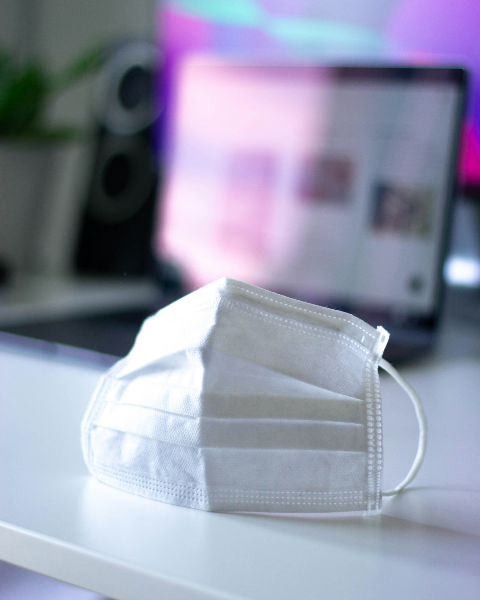

Türkiye'de Maymun Çiçeği Vakası: Güncel Durum ve Önlemler
Türkiye’de maymun çiçeği (monkeypox) hastalığına dair ilk vakaların tespit edildiği bildirildi. Sağlık Bakanlığı, maymun çiçeği vakalarının ülkeye ulaştığını ve sağlık otoritelerinin gerekli önlemleri alarak durumu yakından takip ettiğini açıkladı.
Sağlık Bakanlığı tarafından yapılan açıklamada, Türkiye'de maymun çiçeği hastalığının ilk vakalarının bulunduğu doğrulandı. Bu vakaların, yurt dışından gelen bireylerde tespit edildiği ve sağlık ekiplerinin vakaların tedavisi ve yayılmasının önlenmesi konusunda aktif olarak çalıştığı ifade edildi.
Mars ve Jüpiter bu gece kavuşuyor
Bu gece, gökyüzünde iki büyük gezegen Mars ve Jüpiter'in kavuşumu gerçekleşecek. Astronomlar, bu özel gökyüzü olayının gözlemciler için harika bir fırsat sunduğunu belirtiyor.avuşum, iki gezegenin gökyüzünde birbirine çok yakın göründüğü bir durumu ifade eder. Bu gece Mars ve Jüpiter, birbirine oldukça yakın bir konumda olacaklar. Mars'ın kırmızımsı rengi ve Jüpiter'in parlak beyazışı, gece gökyüzünde etkileyici bir görünüm oluşturacak.
Gezegenler, kavuşum sırasında özellikle göz alıcı olacak. Gözlem yapmak isteyenler için en uygun zaman, gezegenlerin batı ufkunda en yüksek konumda olduğu saatlerde olacak. Şehir ışıklarından uzak, karanlık bir yerde, çıplak gözle ya da bir dürbünle bu etkileyici kavuşumu izlemek mümkün olacak.Mars ve Jüpiter'in kavuşumu, sadece görsel bir şölen sunmakla kalmayacak, aynı zamanda astronomlar için de bilimsel bir ilgi kaynağı olacak. Bu tür kavuşumlar, gezegenlerin hareketleri ve yörüngeleri hakkında bilgi edinmek için değerli bir fırsat sağlıyor. Ayrıca, bu tür gökyüzü olayları, amatör astronomlar ve gökyüzü meraklıları için büyük bir ilgi uyandırıyor.

Meteoroloji Uzmanından Uyarı: Sonbahar Sıcak Geçecek
Meteoroloji uzmanlarından gelen son uyarılara göre, bu sonbahar mevsimi Türkiye genelinde sıcak geçecek. Uzmanlar, sıcaklıkların mevsim normallerinin üzerinde seyredeceğini belirtiyor ve vatandaşları bu konuda bilgilendiriyor.Meteoroloji uzmanları, bu sonbahar sezonunda hava sıcaklıklarının mevsim normallerinin üzerinde olacağını açıkladı. Özellikle Eylül ve Ekim aylarında, birçok bölgede sıcaklıkların 2-4 derece daha yüksek seyredeceği tahmin ediliyor. Bu durum, hem günlük yaşamı hem de tarım faaliyetlerini etkileyebilir.
Uzmanlar, bu sıcaklık artışının sağlık üzerinde olumsuz etkiler yaratabileceğine dikkat çekiyor. Özellikle yaşlı bireyler, çocuklar ve kronik rahatsızlıkları olan kişilerin sıcağa karşı daha dikkatli olmaları ve bol su tüketmeleri öneriliyor. Ayrıca, uzun süreli güneş maruziyeti ve aşırı sıcak hava koşulları nedeniyle dikkatli olunması gerektiği vurgulanıyor.

Türkiye'nin En Kuzey Noktasına Meteor Düştü!
Türkiye'nin en kuzey noktası olarak bilinen Sinop'un İskandinav Yarımadası sınırındaki bölgesine dün gece bir meteor düştü. Olay, bölge halkı ve bilim camiasında büyük bir heyecan yarattı. Meteor düşüşü, gece gökyüzünde yaşanan etkileyici bir fenomen olarak dikkat çekti. Dün gece, Sinop'un Ayancık ilçesi yakınlarında yer alan Türkiye'nin en kuzey noktası olarak bilinen bölgede, gökyüzünden düşen bir meteorun büyük bir patlama sesiyle birlikte yere çarptığı bildirildi. Olayın ardından bölgede ışık patlamaları gözlemlendi ve küçük çaplı bir krater oluştu.
Bilim insanları, meteoru inceleyerek, gezegenimizin dışında var olan materyaller hakkında bilgi edinmeyi hedefliyor. Meteorun içeriği ve yapısı hakkında yapılacak analizler, uzay bilimleri ve gezegen bilimi açısından önemli veriler sağlayabilir. Ayrıca, meteorların Dünya'ya düşme olasılığı ve bu tür olayların etkileri hakkında daha fazla bilgi edinilmesi amaçlanıyor.Olayın hemen ardından, Sinop Valiliği ve yerel yetkililer, bölge halkına bilgi vererek güvenlik önlemlerini artırdı. Bölgede yaşayanların olay yerinden uzak durmaları ve yetkililerin talimatlarına uymaları istendi. Ayrıca, meteorun neden olduğu küçük çaplı hasarlarla ilgili gerekli onarımlar yapılacak.